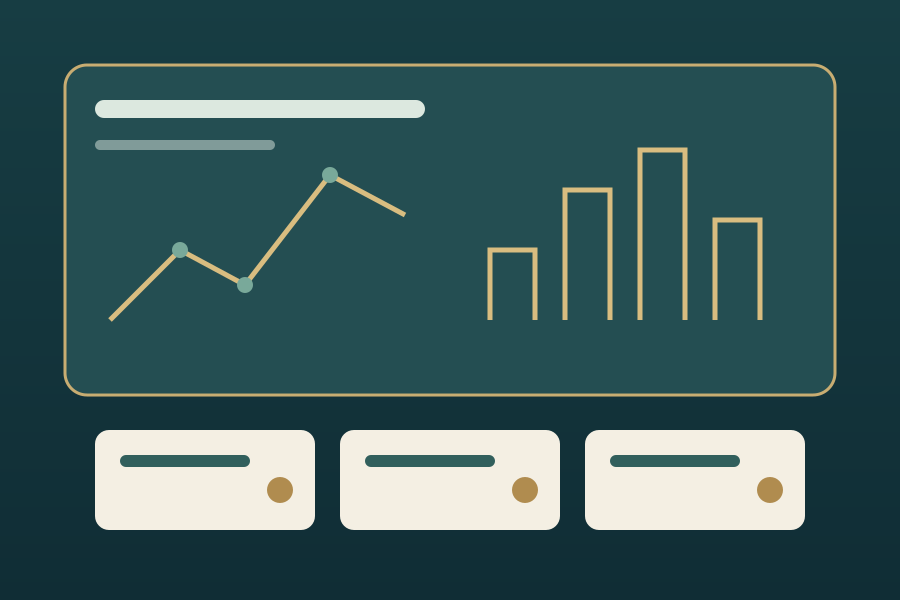
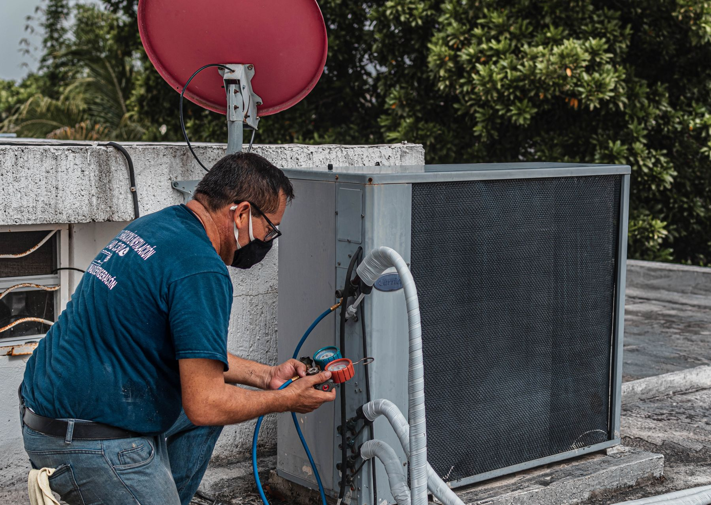
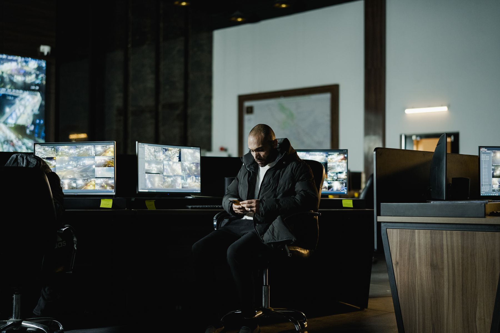

رایانه و لپتاپ
عیبیابی نرمافزاری، نصب سیستمعامل و برنامهها، بهینهسازی و رفع خطا.
خدمات فناوری برای واحدهای برج؛ از رایانه و موبایل تا شبکه خانگی، امنیت اطلاعات و آموزش. درخواست خود را در همین پورتال ثبت کنید و روند رسیدگی را دنبال کنید.
ثبت درخواست پشتیبانی

مجموعه خدمات کامپیوتری و موبایلی اعضای برج
عیبیابی نرمافزاری، نصب سیستمعامل و برنامهها، بهینهسازی و رفع خطا.
راهاندازی، انتقال اطلاعات، تنظیمات، پشتیبانگیری و رفع مشکلات رایج.
تنظیم مودم، Wi-Fi، اتصال دستگاهها، پرینتر و تلویزیون هوشمند.

بررسی و رفع مشکل با حضور و تأیید خود ساکن از طریق ابزار امن ریموت.

بررسی بدافزار، ایمنسازی، تهیه نسخه پشتیبان و بازیابی اطلاعات با هماهنگی.

انتقال فایل و مخاطبان، تنظیم حسابها و راهنمایی کاربردی برای استفاده از ابزارهای دیجیتال.
شفاف، مرحلهبهمرحله و قابل پیگیری
فرم نمونه برای ثبت و مشاهده گردشکار خدمات
اطلاعات را وارد کنید تا درخواست در کارتابل خدمات ثبت شود.